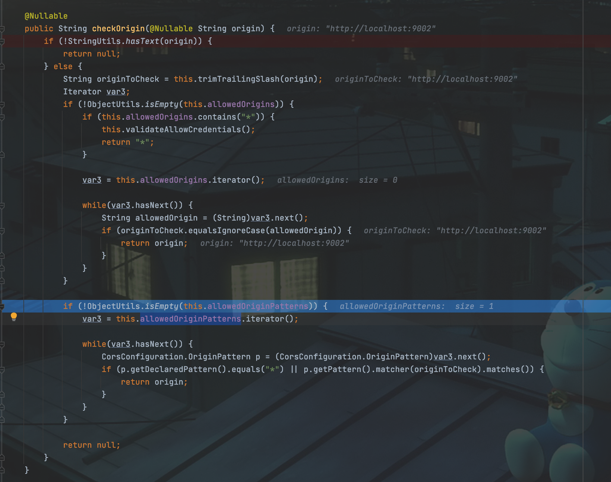
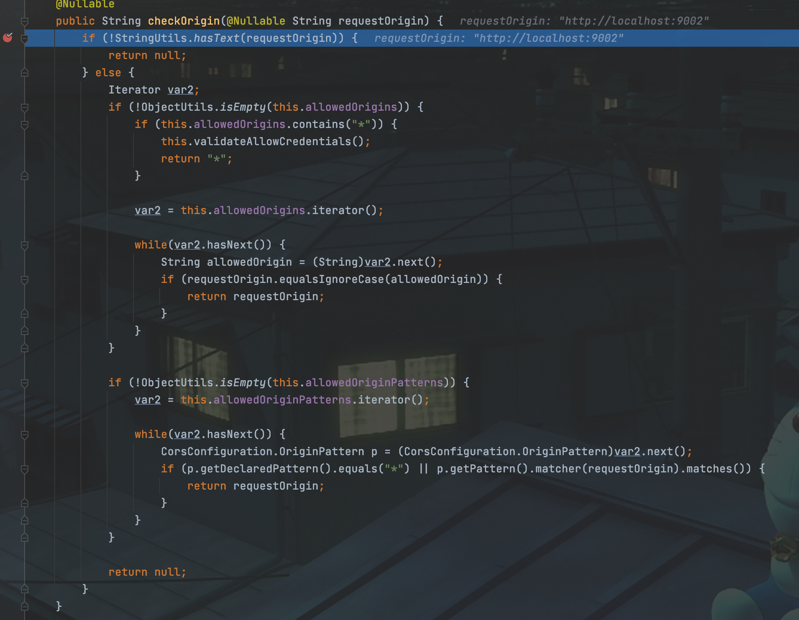
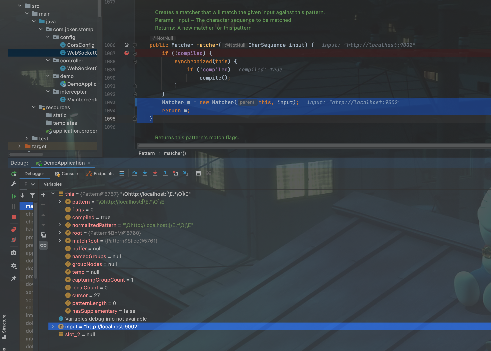
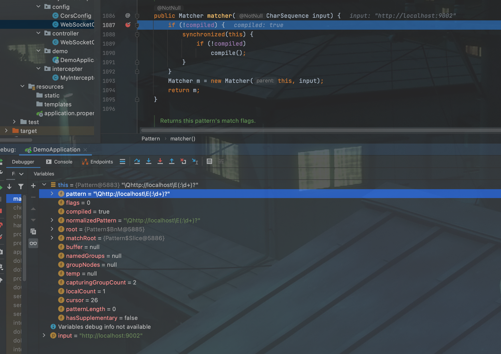

前话
最近在搞WebSocket，前后端分离，需要解决一下跨域的问题。跨域，本来也不是什么难事，但是这次就遇到了一些状况。记录一下。
问题
在项目里配置WebSocket需要实现WebSocketMessageBrokerConfigurer接口，而该接口需要实现一个方法，registerStompEndpoints(StompEndpointRegistry registry)。
如果需要跨域，那么有两种方式，一个是setAllowedOrigins，另一个就是setAllowedOriginPatterns，后者明显更灵活。
这里，我就想限制一下本地，不限制端口号，于是简单看了下文档，看到格式中有这么一行：
https://*.domain1.com:[*] -- domains ending with domain1.com on any port, including the default port
寻思，正好符合我的需求。于是我就写成了http://localhost:[*]，然后在Demo中测试通过，开开心心的把这个东西挪到了项目中。
但是，当项目跑起来，却发现，不是那么回事啊，发过去的请求居然告诉我Access to XMLHttpRequest at 'xxxxxx' from origin 'http://localhost:9002' has been blocked by CORS policy: No 'Access-Control-Allow-Origin' header is present on the requested resource.
我就懵了~
但是当我把http://localhost:[*]换成了http://localhost:*，又通过了。
这是为啥呢？
原因
经过了一顿debug和寻找，比对。我终于发现了我两个项目里面spring-boot-starter-web版本是不一样的，Demo是2.5.5，而正经项目是2.4.5。
所以，我感觉肯定是这两个版本在对request的处理方式不一样。所以，又是一顿debug，然后，发现处理逻辑虽有不同，但是对于origin的检查基本上差不多。
给放两张图：


可以看出，在处理originPatterns上，基本上是一样的。
所以我就更不明白了~
想了想，想起来《盗墓笔记》里的一句话（原话忘了）：”列出所有可能性，一一排除之后，剩下的最后一个，无论他多么不合理，那他也是真理。”
所以，问题只能是出在正则匹配这里了。
但是，正则表达式的匹配，这是java.util里面的内容。跟spring似乎也没啥关系。
那问题还能出现在哪里呢？
又经过了一顿debug，哇，终于发现在正则表达式验证时，pattern不一样了~
如下图所示：


前者是2.4.5, pattern是\Qhttp://localhost:[\E.*\Q]\E，后者是2.5.5, pattern是\Qhttp://localhost\E(:\d+)?.
所以，这就能看出为啥2.4.5通不过验证了，谁家origin还能带[和]啊~
原因找到了，但是这个pattern是怎么变成这副德行的呢？
我们接着找~
最后在CorsConfiguration类中发现了一切的开始：
其中2.4.5版本中对应的spring-web版本是5.3.6，而2.5.5版本中对应的spring-web版本是5.3.10。
前者在CorsConfiguration类中是这么处理我们传进去的字符串的：
OriginPattern(String declaredPattern) {
this.declaredPattern = declaredPattern;
this.pattern = toPattern(declaredPattern);
}
private static Pattern toPattern(String patternValue) {
patternValue = "\\Q" + patternValue + "\\E";
patternValue = patternValue.replace("*", "\\E.*\\Q");
return Pattern.compile(patternValue);
}
所以，他只是把*进行了替换。而后者则复杂一些：
OriginPattern(String declaredPattern) {
this.declaredPattern = declaredPattern;
this.pattern = initPattern(declaredPattern);
}
private static Pattern initPattern(String patternValue) {
String portList = null;
Matcher matcher = PORTS_PATTERN.matcher(patternValue);
if (matcher.matches()) {
patternValue = matcher.group(1);
portList = matcher.group(2);
}
patternValue = "\\Q" + patternValue + "\\E";
patternValue = patternValue.replace("*", "\\E.*\\Q");
if (portList != null) {
patternValue += (portList.equals(ALL) ? "(:\\d+)?" : ":(" + portList.replace(',', '|') + ")");
}
return Pattern.compile(patternValue);
}
所以，一切明了了~
后话
后来，我又翻了翻文档，才发现啊这事谁也怪不得，只能怪自己~
因为，5.3.6版本的spring-framework文档，在对应页面写的清清楚楚：
`public CorsConfiguration setAllowedOriginPatterns(@Nullable List<String> allowedOriginPatterns)`
Alternative to setAllowedOrigins(java.util.List<java.lang.String>) that supports origins declared via wildcard patterns. In contrast to allowedOrigins which does support the special value "*", this property allows more flexible patterns, e.g. "https://*.domain1.com". Furthermore it always sets the Access-Control-Allow-Origin response header to the matched origin and never to "*", nor to any other pattern, and therefore can be used in combination with setAllowCredentials(java.lang.Boolean) set to true.
By default this is not set.
Since:
5.3
写的很明白，例子也举得很明白，而且写着 Since 5.3
于是我陷入了深深的自责当中。
但是，当我再次打开5.3.10版本的页面，发现，哎？他也是 Since 5.3 啊~
参考
spring-framework-current
spring-framework-5.3.10
spring-framework-5.3.6